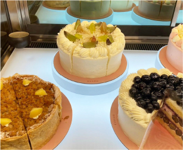
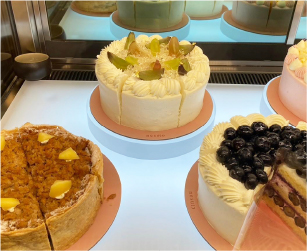
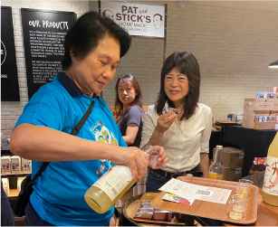
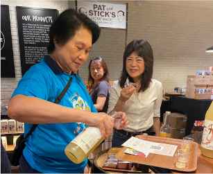
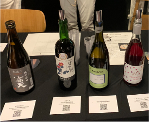
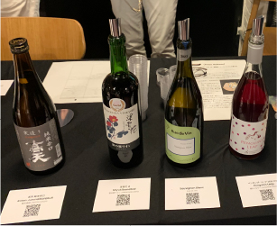
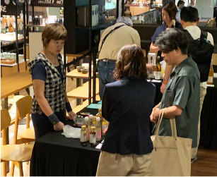
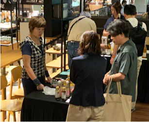

Discover Nagano
Nestled in the heart of Japan, Nagano Prefecture is renowned for its breathtaking natural beauty and vibrant seasonal landscapes. Historically known as "Shinshu," a name cherished to this day, Nagano enjoys pristine high-altitude air and is surrounded by majestic mountains. The region's fertile lands yield an abundance of premium agricultural products, making it famous for its fresh, naturally-grown produce.


Nagano:
The Kingdom of Fruits
Nagano is celebrated as one of Japan's premier fruit-producing regions, earning the title "Kingdom of Fruits." The region's cool climate, combined with large temperature swings between day and night, creates ideal conditions for cultivating fruits with enhanced sweetness and aroma. Known for their rich flavour and exceptional quality, Nagano's fruits are highly regarded across Japan.
Like Jewels: Grapes and Apples from Nagano
Among Nagano's many fruits, grapes and apples stand out for their remarkable taste and popularity. Nagano grapes boast a perfect balance of rich sweetness and refreshing tartness, with a wide variety of cultivars to choose from. Equally impressive are Nagano apples, celebrated for their crisp texture and juicy, unforgettable flavour. These two fruits are truly the crown jewels of Nagano, a testament to the region's natural beauty and the skillful craftsmanship of its farmers.

Shinano Apple

Nagano Purple

Shine Muscat
Queen Rouge
Special Promotion
Nesuto @ Jewel Changi Airport
Jewel, 78 Airport Blvd., #01-236 & 237
Singapore Changi Airport, Singapore 819666
Tel: 6980 5072
Nesuto @ Tanjong Pagar
53 Tras St, #01-01, Singapore 078992
Tel: 6980 5977
https://www.dear-nesuto.comeShinano Apple Tart
$69 (16cm) | $9.80 (slice)9% GST Included
*Available both in-store and online at Nesuto for a limited time only.
Enjoy our seasonal apple tart made with sweet Shinano apples. It features a flaky puff pastry crust filled with creamy almond cream, tender apple chunks, and a crunchy cinnamon almond streusel. Baked until golden brown, it’s best served warm with a scoop of vanilla ice cream—perfect for sharing!
Order Online

Nagano Grape Tart(Queen Rouge, Nagano Purple, Shine Muscat)
$55 (16cm) | $9.80 (slice)9% GST Included
*Available both in-store and online at Nesuto for a limited time only.
Indulge in our buttery tart, perfectly baked to golden perfection and filled with a luscious vanilla crème diplomat. Topped with a vibrant assortment of seasonal Nagano grapes— Shine Muscat, Queen Rouge, and Nagano Purple—each bite offers a delightful balance of creamy sweetness and juicy freshness. A true celebration of seasonal flavors in a beautifully crafted dessert!
Order OnlineNagano Grape Shortcake(Queen Rouge, Nagano Purple, Shine Muscat)
$97 (16cm) | $13.60 (slice)9% GST Included
*Available both in-store and online at Nesuto for a limited time only.
Savor our seasonal fruit shortcake, featuring layers of light and fluffy vanilla sponge cake and velvety yogurt Chantilly cream. Bursting with the juicy sweetness of Nagano grapes— Shine Muscat, Queen Rouge, and Nagano Purple—this delightful treat is finished with a delicate sake jelly for a hint of sophistication. Perfectly refreshing and a celebration of seasonal flavors!
Order Online
Nagano Products
Nesuto @ Tanjong Pagar
53 Tras St, #01-01, Singapore 078992
Tel: 6980 5977

Honey-sweetened
"Kogyoku" Apple Juice
Nishimaki Youhouen
*Available at the Nesuto Tanjong Pagar outlet for a limited time only.
Crafted by a family-owned apiary, this honey is made by a certified senior sommelier using apples and honey from Nagano, Japan. The refreshing tartness of the "Kougyoku" apple perfectly complements the natural sweetness of the honey, creating a delightful balance of flavours.
Brown Rice Coffee (Drip Type)
Kurohime Wakanyaku
*Available at the Nesuto Tanjong Pagar outlet for a limited time only.
Made from 100% safe and traceable Japanese brown rice, this brew has a refreshing aroma with subtle sweetness and a pleasantly sharp bitterness, reminiscent of coffee. It is also brewed with water, and its flavour remains consistent even with prolonged use. Caffeine-free, it's suitable for everyone to enjoy at any time.


Strawberry Amazake Smoothie
Inoue Torao Nouen
*Available both in-store and online at Nesuto for a limited time only.
Amazake is a traditional Japanese fermented drink that has been cherished for centuries as a nourishing, revitalising beverage. Its natural sweetness comes entirely from fermentation, without any added sugar. This version contains 2.5 times the amount of strawberries, grown in Nagano, to amazake, offering a rich, fruity flavour. It's perfect on its own, mixed with yoghurt, or drizzled over ice cream for a refreshing and indulgent treat.
Hachi Hige Honey Set
Ogihara Yohoen
*Available at the Nesuto Tanjong Pagar outlet for a limited time only.
Experience six unique types of honey, each capturing the seasonal floral essence of Nagano. This rare, 100% pure Japanese honey from Nagano is unheated, preserving its natural flavours. Perfect for personal enjoyment or as a thoughtful gift.
Event Report
 



 



 

 
